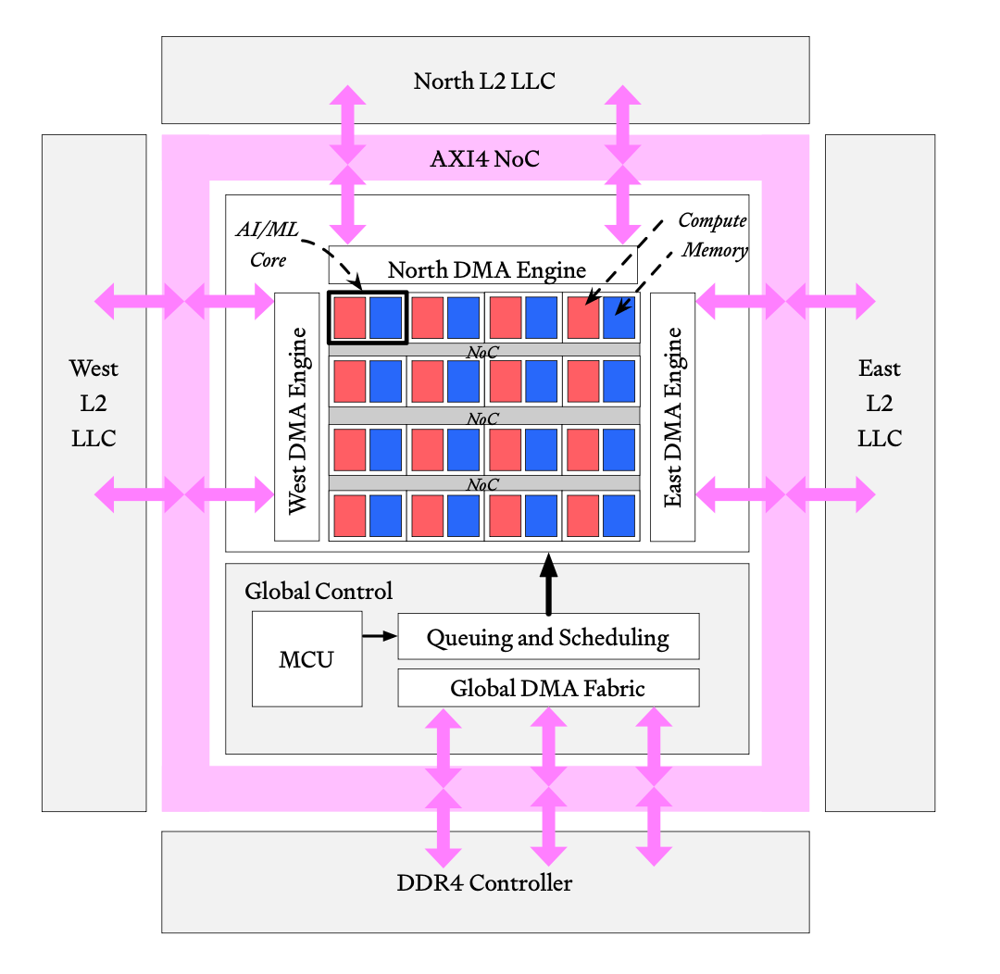
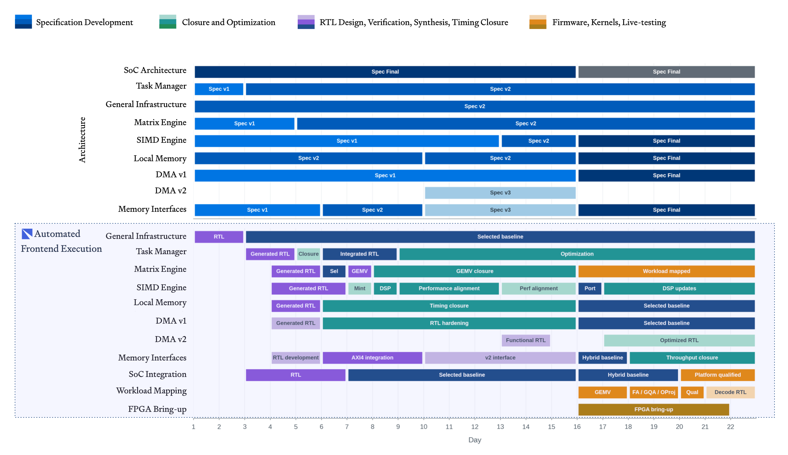

Redwood: An AI System Designed an Accelerator in Two Weeks — What That Actually Means
TL;DR
- "Redwood: A Frontier AI Accelerator Designed, Verified, and Deployed from Scratch in 2 Weeks by AI" (arXiv 2608.26418; Architect Labs Team, Palo Alto — a seven-page company report, not peer-reviewed) claims the first production-worthy AI accelerator designed end-to-end by an AI system. Two human architects wrote a high-level specification; the system generated the performance model, RTL, UVM verification environments, formal proofs, firmware, drivers and kernels, closing every block at 95% code and functional coverage, with each architectural change regenerated, reverified and redeployed to hardware in under 48 hours.
- What was measured and what was projected are different things. Measured: Redwood Nano running Qwen3-0.6B on an AMD Versal VPK180 FPGA at 250 MHz, at 13 peak / 12.1 average tokens per second — against a measured NVIDIA Jetson Orin Nano at 28. The headline 1.75× throughput, 1.9× lower power and 3.4× performance-per-watt are an analytic projection of an unbuilt Samsung 8 nm ASIC (49 tokens/s at 1.335 W) compared against that measured Jetson. There is no silicon; physical design, tapeout and post-silicon validation are named as future work.
- The recursive-self-improvement claim is the thinnest part: Qwen3 was deployed on Redwood, exposed as an inference endpoint inside their own system, and "through repeated sampling discovered multiple timing improvements and kernel optimizations." No magnitudes, no baseline, no ablation. The paper itself frames this as "one of the earliest demonstrations" and notes the gap between hardware an AI can design and models that can actually run on it.
Why this matters
Strip the framing and there is a real result underneath. The electronic-design-automation (EDA) industry has been claiming 10× AI productivity gains on individual tasks for two years while first-silicon success has fallen to 14% and three-quarters of chip programs run late. The paper's argument for why those coexist is the interesting one: AI accelerated activities inside a flow whose latency is dominated by handoffs between them. Architecture freezes, then RTL, then verification, then firmware — each waiting on the last, each frozen artifact a commitment made under uncertainty about workloads that shift in months.
Their bet is that if one system generates all of those layers from a single specification, the handoffs stop existing and hardware-software co-design becomes a property of the system rather than a coordination problem between teams. The 48-hour spec-change-to-hardware loop is the evidence for that bet, and it is more interesting than the perf-per-watt table, because it is measured rather than projected.
For this tracker the relevance is the RSI thread. ASI-Evolve evolves architectures, data pipelines and learning algorithms; AdaExplore generates GPU kernels; AI4AI-Bench asks whether agents will touch the learning algorithm at all. Redwood is the same question pushed one layer down the stack — into the silicon the models run on — and it arrives with exactly the calibration problem this tracker keeps flagging: a strong engineering artifact wrapped in an RSI claim the evidence does not carry.

Figure 1 from the paper: the Redwood SoC. Because the memory interface is confined to modular DMA engines, the same fabric can be embedded in a larger SoC or packaged as a standalone chiplet.
The core idea
In plain English. A chip specification normally gets translated by hand, in sequence, into half a dozen artifacts by half a dozen teams. Architect Labs built a platform that treats the specification as the single source of truth and generates all of those artifacts in parallel — including the ones that check the others. When a human changes the specification, everything downstream is regenerated and rechecked rather than patched.
The vocabulary, defined as used. RTL is the register-transfer-level source of the chip, the hardware equivalent of source code. UVM is the standard framework for building simulation testbenches. Formal proofs are mathematical checks that a block always satisfies a property, rather than tests on cases. Coverage is the fraction of the design's lines and defined behaviors the tests exercise — 95% is the closure target here. Hardware-in-the-loop means checks run against the design synthesized onto an FPGA, not only in simulation. And ALP, the Architect Labs Platform, is the in-house system that does the generating; the paper says its artifacts come from "AI and compiler based methods," so not all of the automation is a model.
Redwood itself is a tile-based spatial-dataflow accelerator: a mesh of identical tiles, each pairing a small RISC-V control core with a systolic matrix engine and a SIMD vector engine over 512 KB of local memory, connected by a credit-based network and fed by DMA engines at the edges. Everything is aimed at one workload shape — single-batch, low-latency transformer decoding on-device.
How it works
The loop in one sentence. Two humans write and keep revising a specification; everything below it — performance model, RTL, testbenches, formal properties, firmware, kernels — is generated, verified and redeployed to an FPGA automatically, in a cycle short enough (48 hours) that architectural choices can be tried rather than committed to. Everything else is detail about what "verified" means and which numbers are measured.
One accelerator, specification to measured token, in 22 days
The project history below is reconstructed from the paper's own repository-commit figures, so the timeline is evidence rather than narrative.
Step 1 — Two humans write the specification. They capture the workload and the architectural constraints: single-batch, low-power, ultra-low-latency inference for physical AI. There is no pre-existing accelerator IP to start from — the paper claims zero. This is the only human-authored artifact in the chain, and, importantly, it is not written once and frozen.
Step 2 — Generate the performance model before any hardware exists. The platform writes the performance model, firmware and kernels before RTL or verification collateral. This inverts the usual order and is the concrete payoff of the co-design claim: architects can see what a design choice costs in tokens per second before anyone implements it.
Step 3 — Generate RTL, and generate the things that check it. Testbench generation, test-case development and coverage closure are fully automated, with no human design-verification participation. The paper contrasts this with the common "AI agent for verification" pattern where an engineer chats their way to a testbench — still human-bounded, still not shortening the program. Every block reaches 95% code and functional coverage via commercial EDA tools, a proprietary formal engine, and hardware-in-the-loop checks.
Step 4 — Let it search microarchitectures, not just tune parameters. Because RTL generation is automated, the system explores a space "an order of magnitude larger than a human team can cover in the same time." The paper's worked instance is the SIMD engine: individual vector lanes are easy to replicate, but reductions like max and min span all lanes, and that is where the design space lives. The distinction drawn is real — prior automated exploration adjusted bit-widths and rearranged registers, while these candidates differ in control paths, datapaths and state machines.
Step 5 — Put it on an FPGA and make the loop fast. Redwood Nano — a 2×2 tile array — is synthesized onto an AMD Versal VPK180 at 250 MHz. An in-house emulation environment multiplexes FPGA access across hundreds of concurrent agents so they can run experiments for days without human involvement. Moving optimization runs from simulation onto that environment cut them from 15 hours to 15-30 minutes — the largest reported speedup in the paper, and what makes a 48-hour respin plausible.
Step 6 — Bring up a real model and measure it. Week three brings Qwen3-0.6B online. Commit activity peaks at 115 merges in a day during workload mapping and FPGA bring-up. Measured end to end — prompt sent from host, model run on the FPGA, each output token returned — Redwood Nano does 13 peak and 12.1 average tokens per second. The Jetson Orin Nano, measured on the same model at a 1020 MHz GPU clock, does 28.
Step 7 — Project what the same design would do in silicon. Since the FPGA is four times slower in clock and four times narrower in memory bandwidth than the target, the paper builds an analytic roofline and projects onto a Samsung 8 nm-class process: 49 tokens/s at 1.335 W and 2.88 mm². This is where the 1.75× / 1.9× / 3.4× headline comes from, and it compares a projected Redwood against a measured Jetson.

Figure 11 from the paper. Read the top block carefully: the specification rows are not a single bar at day 1. Several units are still on Spec v2 or v3 past day 16, so the human-authored layer was being revised throughout the project the automation ran inside.
The machinery behind step 7
Everything in the headline table descends from a roofline model, so it is worth seeing exactly what is assumed.
Peak arithmetic rates come straight from the FPGA configuration:
Reading it: 4 is the number of tiles in the Nano configuration, 64 the INT8 multiply-accumulate lanes per tile, \(250\times10^{6}\) the 250 MHz clock in cycles per second, and the final 2 counts a multiply and an accumulate as two operations. The SIMD datapath is much smaller — 32 BF16 operands per cycle gives 8 Gop/s.
Sustained external memory bandwidth is a single measured-rate calculation:
Here 3900×10⁶ is the DRAM data rate in bits per second per pin, 32 the number of pins, the division by 8 converts bits to bytes, and 0.90 is an efficiency derate. \(B\) is the denominator of every memory-bound estimate below.
For each unfused operator \(i\) the model counts arithmetic work \(O_i\) and total DRAM traffic \(Q_i\) (all operand reads plus result writes), then takes the slower of the two paths:
\(P_i\) is whichever peak rate that operator uses — the matrix engine's 128 Gop/s for projections, the SIMD engine's 8 Gop/s for normalization and activations. The \(\max\) encodes the assumption that memory and compute overlap within one operator but nothing is hidden across operator boundaries, because each consumes the previous one's result. Summing gives the token bound:
The diagnosis this produces is the useful part: one token moves 0.627 GB, requiring 44.65 ms of DRAM service against 12.29 ms of arithmetic — memory service is 3.6× arithmetic, so decoding is strongly memory-bound and the accelerator's compute is not the constraint. Note also that the measured 12.1 tokens/s sits well below even this 21.73 ceiling; the paper attributes the gap to launch, synchronization, pipeline fill and host overhead, which the roofline excludes.
Power is the other half of the headline, and it is analytic:
\(\alpha\) is average switching activity (taken from the observed activity while running Qwen3-0.6B), \(C\) the switched capacitance implied by 2 million logic cells, 500,000 flip-flops and 512 KB of SRAM per tile, \(V=0.75\) V the nominal core voltage, and \(f=1.0\) GHz the target frequency. That yields 0.958 W dynamic, 0.07 W static, and about 1.335 W total chip-side including SoC and clock management. Area is estimated by a bottom-up gate-equivalent method with a 15% design-for-test overhead, a 70% placement-utilization factor and a further 20% for clock-tree repeaters, landing at 2.88 mm².
# What was actually generated, and from what
spec <- 2 human architects # revised repeatedly through day 22 (Fig 11)
loop until timing/area/power targets met:
perf_model, firmware, kernels <- ALP # BEFORE any RTL exists
rtl <- ALP # AI + compiler-based generation
uvm_tb, tests, sva, formal <- ALP # no human DV in the loop
coverage <- run EDA sim + proprietary formal engine
if coverage < 95%: generate more tests # closure is automated
bitstream <- synthesize onto Versal VPK180 @ 250 MHz
measure on FPGA # 15h sim run -> 15-30 min
if spec changed: regenerate everything # full cycle < 48 h
deploy Qwen3-0.6B # 12.1 tok/s avg, measured
project to Samsung 8nm: # NOT measured
assume f = 1 GHz, tile-ingress BW 16 -> 64 GB/s, 4x compute
-> 49 tok/s, 1.335 W, 2.88 mm^2
# "RSI": run Qwen3 on Redwood, sample repeatedly, keep timing/kernel wins
# (no magnitudes reported)
What the paper is careful about, and what it is not
Three things belong here rather than mixed into the narrative above.
Coverage is a threshold, not a proof. 95% code and functional coverage is the industry closure bar, and the paper's strongest verification claim is empirical: zero bugs found when the first RTL drop went from simulation to FPGA, and no instance to date of a bug missed in verification but revealed in hardware. That is a real signal, but the hardware in question is a 2×2 tile array at 250 MHz running one 0.6B model — a narrow test of a design intended to scale.
"No human intervention below the specification" is exactly as strong as the specification is stable. The same section states that human experts maintain ALP throughout the project and adjust the specification or design intent using functional, area, performance, timing and power feedback. Figure 11 shows what that looks like: several architecture units are still cycling through spec versions past day 16. The automation is real; the boundary it sits under moved continuously.
The model claim and the evidence do not line up. The abstract says Redwood Nano "runs multi-billion-parameter models like Llama and Qwen." The only model with reported numbers anywhere in the paper is Qwen3-0.6B — 0.6 billion parameters. No Llama measurement, no multi-billion-parameter measurement, appears in the evaluation.
Results
- Measured, on FPGA (Qwen3-0.6B, host-to-host including prompt transfer and token return): Redwood Nano at 250 MHz, 16 GB/s LPDDR4 — 13 peak / 12.1 average tokens/s. NVIDIA Jetson Orin Nano at 1020 MHz, 68 GB/s LPDDR5 — 28 tokens/s. On the only hardware that exists, Redwood is roughly 2.3× slower with roughly 4× less memory bandwidth.
- Roofline of that same FPGA configuration: 21.73 tokens/s optimistic ceiling, 17.56 if memory and execution serialize within every operator. One decoder layer costs 1.241 ms; 28 layers plus embedding, final norm, LM head and argmax give 46.02 ms per token.
- Projected, Samsung 8 nm-class ASIC (1 GHz logic clock, tile-ingress bandwidth raised from 16 to 64 GB/s by assuming the same bandwidth as the Jetson, compute engines scaled 4×): architectural ceiling ~95 tokens/s, conservative profiled projection 49 tokens/s; 1.335 W; 2.88 mm². Against the measured Jetson that is 1.75× throughput, 1.9× lower power, 3.4× tokens per watt (36.7 vs 10.8). Jetson's area is listed "NA," so the area figure has no comparator, and both power figures exclude memory controllers.
- Process metrics, the measured part of the AI claim: spec to finalized RTL, verification, firmware, custom kernels and timing closure in two weeks, plus a third for workload bring-up — 22 days. Every block at 95% code and functional coverage. Any architectural change regenerated, reverified and redeployed to FPGA in under 48 hours. Peak 115 merge commits in a day. Optimization iteration cut from 15 hours to 15-30 minutes.
- Recursive self-improvement: Qwen3 deployed on Redwood as an inference endpoint inside the AI system found "multiple timing improvements and kernel optimizations for several of its own operations, all at zero inference cost." No magnitudes, no comparison against the same model on conventional hardware, no ablation.
How it connects
- ASI-Evolve: AI Accelerates AI — the same thesis one layer up. ASI-Evolve evolves architectures, data pipelines and RL algorithms and backs each with a real training run; Redwood evolves microarchitecture and backs it with an FPGA measurement plus a projection. Both are strongest where the artifact is cheap to evaluate and weakest where the evaluation is the expensive part — and both bundle a genuine engineering result with a recursion claim that the controlled evidence does not reach.
- AdaExplore: Failure-Driven Kernel Generation — the direct neighbour on the software side. AdaExplore generates GPU kernels for fixed hardware, converting compile and runtime failures into permanent constraint memory; Redwood generates the kernels and the hardware they target under a single objective. AdaExplore's finding that the memory (not the tree search) carries the gain is the question to put to ALP: how much of the 22 days is model capability versus accumulated tooling and constraint knowledge that a compiler-based flow supplies?
- AI4AI-Bench — the calibration instrument this paper lacks. Its central finding is that agents overwhelmingly move budgets and hyperparameters rather than touching the layer that determines how a system learns, and that the ones reaching the deeper layer score roughly twice as well. Redwood's SIMD exploration claims the analogous deep layer in hardware — different control paths and state machines rather than bit-width tweaks — but with no held-out scoring, no baseline system and no independent replay, it is a demonstration rather than a measurement. (A NAVER AI4AI benchmark is not yet tracked here with a tutorial.)
- AIDE² / RSI evidence — the right yardstick for the paper's last section. Weco's RSI claim came with 100 unattended outer steps, seven accepted improvements, paired significance tests on held-out benchmarks, and an explicit refusal to claim the next level up. Redwood's is one sentence with no numbers. Carry the contrast: the artifact here is far more impressive, the RSI evidence far weaker.
- No Universally Best Harness for Automated Discovery — Architect Labs' actual product is a harness: a platform, an emulation environment multiplexing hundreds of agents over one FPGA, and AI-native EDA tools. The result is a single-instance existence proof on one accelerator for one workload shape — exactly the generalization question that paper poses.
Critical take
Start with what is solid, because it is not nothing. A 22-day path from specification to a real FPGA running a real transformer, with generated testbenches and formal collateral, 95% coverage on every block, and no human in the verification loop, is a serious engineering result whether or not the perf-per-watt table survives contact with silicon. The 48-hour respin and the 15-hours-to-15-minutes iteration collapse are measured process facts, and they are the strongest support for the paper's actual thesis, which is about handoff latency rather than about chips.
Now the claim in the title. "Deployed" means an AMD Versal FPGA, not silicon; the paper lists physical design, tapeout and post-silicon validation as future work. Every number in the headline comparison is a projection of an unbuilt chip against a measured competitor, and the projection is generous in three compounding ways: it assumes a 4× clock increase, it assumes the tile-ingress bandwidth rises from 16 to 64 GB/s by stipulating the Jetson's memory bandwidth, and it scales the compute engines 4×. Power is computed from \(\alpha C V^2 f\) with an activity factor observed on the FPGA, while the Jetson's 2.59 W is measured on real hardware. Area is estimated bottom-up with three stacked overhead factors and has no comparator at all, since the Jetson's area is "NA." On the hardware that exists, Redwood is 12.1 tokens/s and the Jetson is 28.
The comparison target also flatters the result. A fixed-function accelerator co-designed for single-batch INT8 decode beating a general-purpose GPU SoC on tokens per watt is what specialization is for — evidence about the architecture, not about who designed it. Nothing isolates the AI's contribution: no human-designed control, no comparison against a conventional team on the same spec, no released RTL, no independent replication.
The recursive-self-improvement section is the part to discount hardest, and the paper half-concedes it. Deploying Qwen3 on your own accelerator and having it suggest timing and kernel fixes "at zero inference cost" is nice dogfooding, but with no magnitudes it cannot be distinguished from the same model producing the same suggestions on any other hardware. The authors themselves note the gap between AI systems capable of designing hardware and AI models capable of running on it — the honest statement that the loop is not closed. Against AIDE²'s carefully hedged Level-1 claim, this is a Level-0 anecdote in a Level-2 sentence.
Finally, "no human intervention below the specification" is doing more work than it looks. Humans maintain the platform throughout, adjust the specification and design intent using functional, area, timing and power feedback, and — per the paper's own commit-derived timeline — were still revising unit specifications past day 16. Some verification collateral comes from "compiler based methods," which is deterministic tooling, not a model. None of this makes the result fake; it makes the headline a statement about a boundary that itself moved for three weeks.
If you remember three things
- Separate the measured from the projected. Measured: 12.1 tokens/s on an FPGA against a Jetson's 28. Projected: 49 tokens/s at 1.335 W in Samsung 8 nm, which is where 1.75× / 1.9× / 3.4× comes from. There is no silicon, and the projection assumes 4× clock, 4× memory bandwidth borrowed from the comparison target, and 4× compute.
- The real result is process latency, not perf-per-watt. Spec to FPGA-running-a-transformer in 22 days, 95% coverage on every block with no human in verification, any spec change back on hardware in 48 hours, and optimization runs down from 15 hours to 15-30 minutes via FPGA-multiplexed emulation. That is what the commit history actually shows, and it is what would change chip programs if it replicates.
- Decoding is memory-bound, and the roofline says so plainly. One Qwen3-0.6B token moves 0.627 GB: 44.65 ms of DRAM service against 12.29 ms of arithmetic, a 3.6× ratio. Nearly all of the projected gain comes from raising bandwidth and clock, not from the compute fabric — which is a useful reminder that on-device inference accelerators are won at the memory interface.